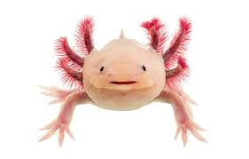

TECNOLOGIAS DE LA INFORMACIÓN II
Bienvenida
Galería
Cuestionario
Quienes somos
Contactos
Preservación de anfibios en México

Integrantes:
Tahis Gutierrez
Abril Leija
Emiliano Flores
Campus:
UVM Lomas Verdes
Docente:
Mora Granados Beatriz Janet
¡Haz clic aquí!